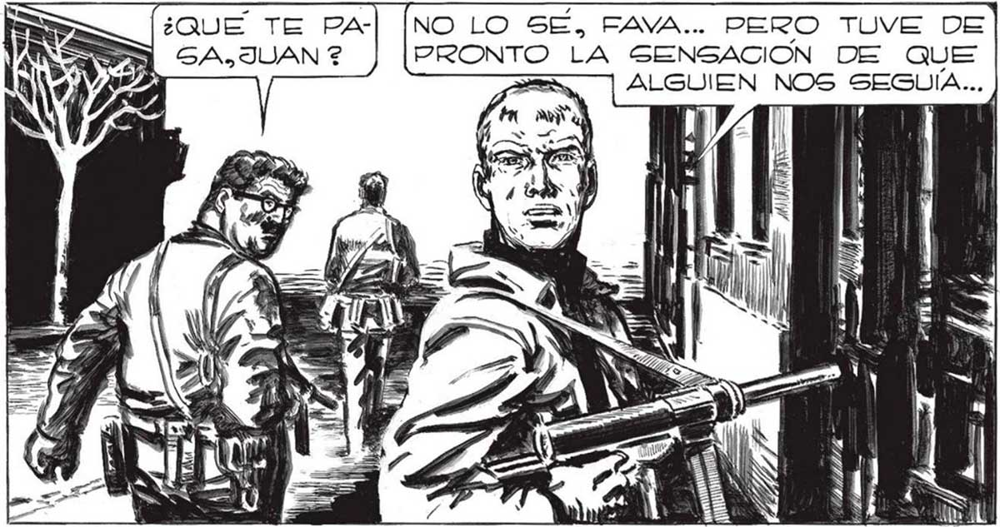

250 L CENTRO. ESTA ¿QUE TE PAGA. JUAN ? (DESDE LUESO, NO DEBEMOS | DESECHAR LAS PRECAUCIONES... CUANTO MAS TIEMPO PASEMOS INADWVERTIDOS MEJOR SERA... Mm SS APENAS SEPAMOS ALGO CONCRETO GOBRE LOS ELLOS, JUAN, TE PROMETO QUE EMPRENDEREMOS EL REGRESO. NO LO SE, FAVA... PERO TUVE DE PRONTO LA SENSACION DE QUE > 4 uy / BIEN, SIEMPRE QUE ALGUNO DE LOS COHETES NO TERMINE POR ES” TA EÉrco ave eL de EXCESO DE PELIGRO PUEDE CONDUCIR A LA SATURACION. LA PERSPECTIVA DE QUE UN Es TALLIDO ATOMICO ACABARA DE PRONTO CON EL INVASOR Y CON NOSOTROS, NO NOS INQUIETABA DEMASIADO. HgqgAN y TONTERIAS, JUAN... ALGÚN HOMBRE-ROBOT... SIGAMNMOS O NO ( LLEGAREMOS CUANDO ME VOLVI ME PARECIO QUE ALGO SE ESCONDÍA EN LA ESQUIPOSIBLEMENTE EN ESTOS MOMENTOS ESTÁ SIENDO ADVERTIDA LA MUERTE DEL 'MANO” DE PLAZA ITACREO QUE VAMOS PORQUE CONOCIENDO LA SUPERIORIDAD DE ELLOS, GABEMOS QUE PREPARADOS FaARA FRUSTRAR UN ATAQUE ATÓMICO... PERO... TRANQUILOS DE ESTAR NO DEBEMOS PONERNOS APRENGIWVOS...¡DE SOBRA SABEMOS ELLO DEMORARA LA PERGECUCION ... ADEMAS, NO IMAGINARAN QUE ESCARAY PASION
